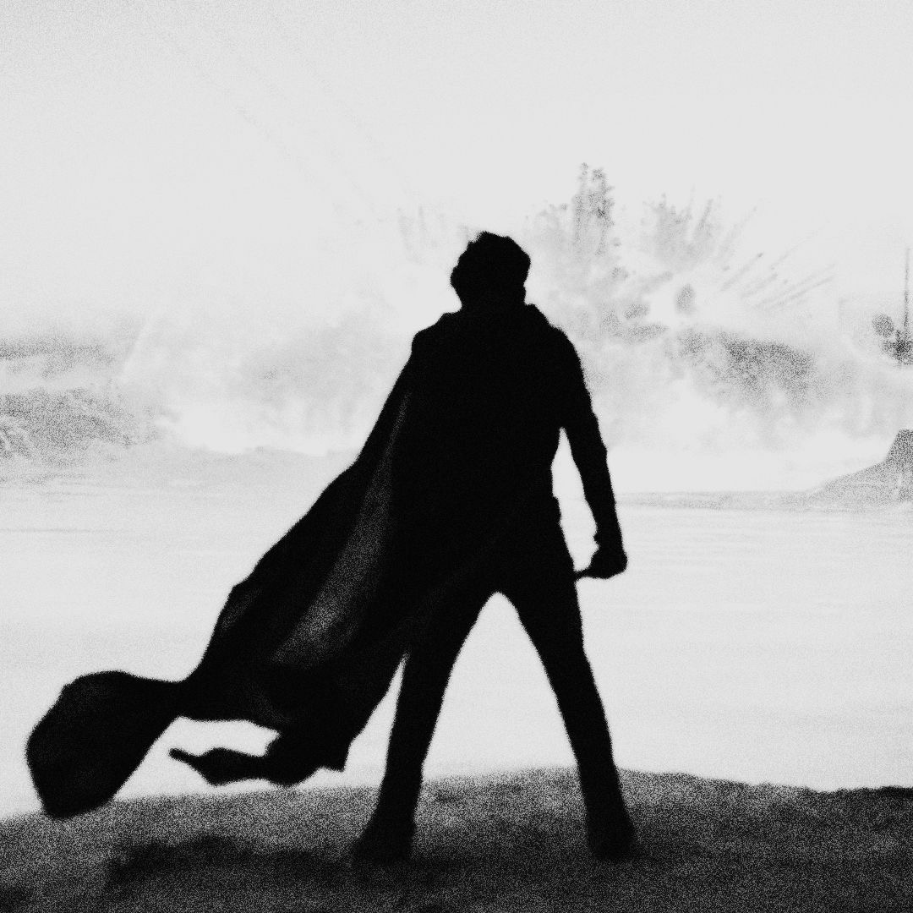
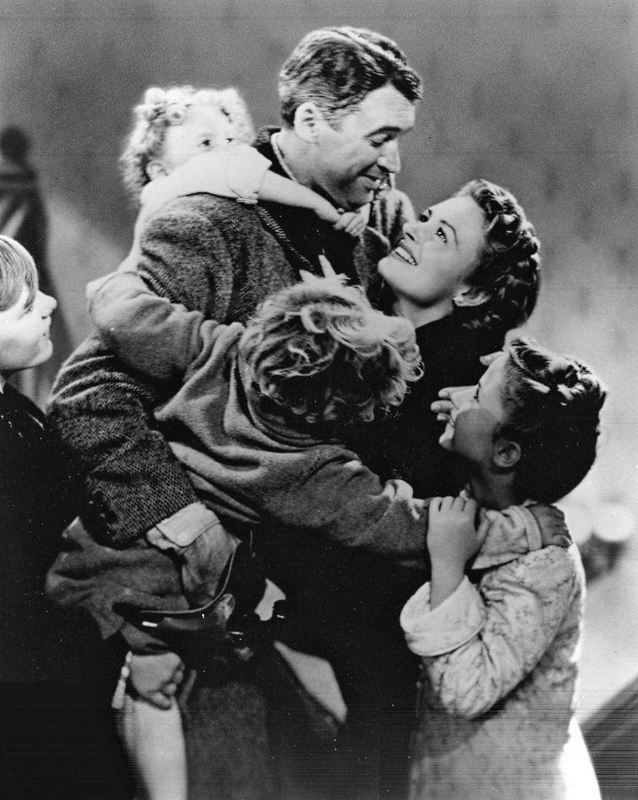
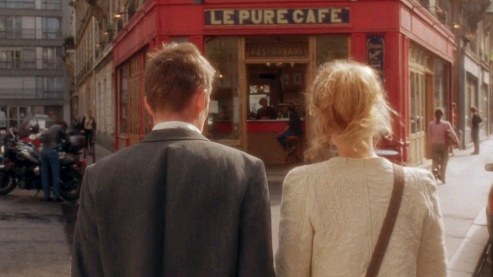

Just like colors, film exists on a spectrum.
It carries different themes, emotions, and stories waiting to be understood.
Like art, cinema is made of many layers—each scene, line, and silence contributing
to something deeper than entertainment alone.

Dune Part Two

It's a Wonderful life
The Holdovers

Before Sunrise